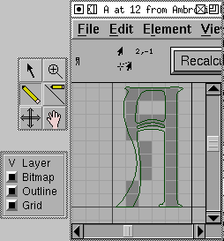

Bitmap Glyph View¶
The bitmap view is vaguely similar to the outline view. It is also designed for editing glyph shapes, but here bitmap glyph shapes.
At the top of the view is a small region showing an unmagnified view of the glyph, to the right of that are two information displays, the first shows the current location of the mouse pointer, and the second shows (if the mouse button has been depressed and not released yet) the offset from the place where the mouse was pressed to the current pointer location. The coordinate system here is in pixels with the origin at the glyph’s origin. Next to this is a button (here truncated) that allows you to recalculate the bitmap (rasterize the outline and place the result in the window for editing).
Underneath is the main display, showing the bits in the image, the outline of the glyph and a grid.
A bitmap glyph composed of two bitmap references¶
As in the outline view you may choose to make the palettes free floating windows by unchecking .
Layers¶
There are three layers to the bitmap view, the bitmap itself, the outline glyph and the grid lines. You are always editing in the bitmap layer so there is no control over what layer is editable, just which ones are visible.
Tools¶
There are only six tools on the bitmap palette (there are some others available by right clicking in the view, this generates a popup menu.
The pointer tool allows you to select a region of the screen, and move it around or copy it (a copy when nothing is selected copies the entire bitmap). The arrow keys will also move the selection around. In a bitmap only font the pointer tool can change the advance width.
The if you click with the magnifying tool the view is magnified, centered around the point at which you clicked. If you hold down the Meta (or Alt or CapsLock) key during the click then the view will be minified.
The pencil tool allows you to set or clear bits. If you depress the mouse button then the pencil will toggle the bit under the cursor, if you then drag it over other bits they will be set if the first bit was set, and cleared if the first was cleared.
The line tool (the pencil with the line beside it) will draw straight lines. It behaves like the pencil tool on whether it sets or clears a line. The Shift key does not constrain this window.
The four-arrow tool moves the entire bitmap.
The hand scrolls the screen.
Anti-Aliased Glyphs¶
This window may also be used to edit anti-aliased glyphs (glyphs which are represented by shades of grey rather than by black and white. In the information area there is a little rectangle which shows the current color that will be used by the pencil (line, rectangle, etc.) tool.
The behavior of the drawing tools is slightly different here. In a bitmap glyph the color used for drawing is the opposite of whatever color is currently under the cursor, but that doesn’t work in an environment with more than two colors. So you must select what color you are going to draw with manually.
There are two ways to select the drawing color:
With the pencil tool selected, hold down the Alt (Meta) key. The cursor changes to an eyedropper. Position the cursor over a pixel with the right color and click the mouse.
Use the Shades palette.
Shades¶
The shades palette is only visible in an anti-aliased glyph. The palette displays all the possible shades of grey available to this glyph. Glyphs with more bits per pixel will have more shades of grey.
The currently selected drawing color is outlined in green. To select a new color, move the cursor to the desired color and click the mouse.
As the cursor moves over the bitmap in the bitmap view, the color under the cursor will be outlined in white.